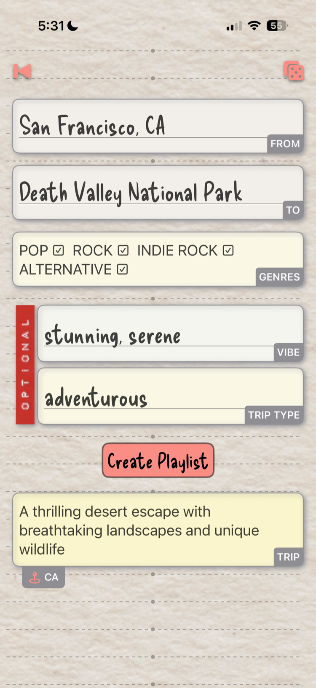
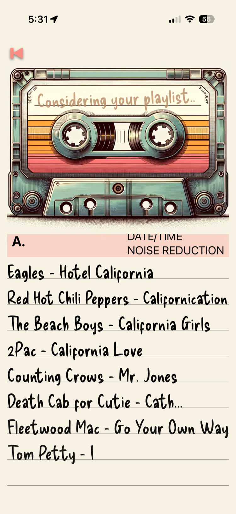
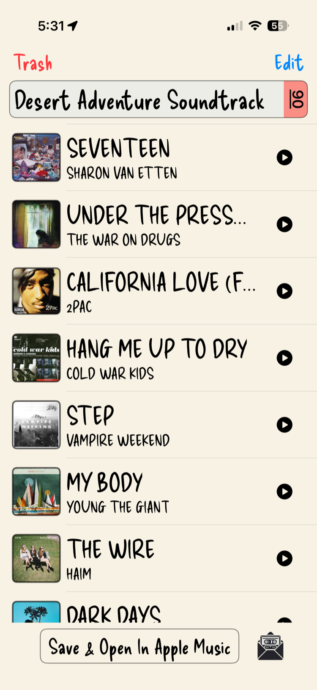
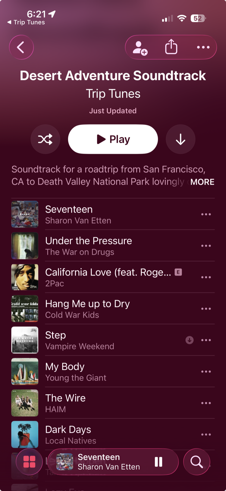

Don't know where you're headed?
Trip Tunes pitches you a trip. Like it? Tap again and it builds the soundtrack to match.
It suggests a nearby destination, a trip type, and a travel vibe tailored to where you are — then, once you're sold, builds a custom Apple Music playlist for the drive. It all runs privately on your iPhone, powered by Apple's Foundation Models.
Two taps to a trip you didn't know you wanted

1Tap to generate a trip
One tap and Trip Tunes suggests a nearby destination, a trip type, and a travel vibe — tailored to where you are. No forms, no blank page to stare at.

2Tap to generate the playlist
Like the idea? Tap again, and Trip Tunes builds a custom Apple Music soundtrack to match the trip — cued up and ready for the drive.

A soundtrack that follows the whole route
This version digs deeper into your trip. Trip Tunes maps the full route, then leans the playlist toward the towns, regions, and landmarks you'll actually pass — so the songs reflect the local music all along the way, not just the place at the end.
Point it from San Francisco to Death Valley and you get California top to bottom — a richer, more local mix than before.

Then it's yours in Apple Music
One tap saves the whole soundtrack to your library as a real Apple Music playlist — full album artwork, ready to play, download for the dead zones, and share with whoever's riding along.
Your road-trip tape lives on in Apple Music long after the drive is over.
Powered by Apple's Foundation Models
Your trip ideas never leave your phone. Each suggestion is generated privately, on-device, with Apple's Foundation Models framework — so you can discover new adventures without sending your location or personal data to any server. On supported devices, it all happens right on iPhone.
Find your next summer drive.
Suggest a Trip arrives in Trip Tunes 2.0 — launching July 2026.
Download on theApp Store